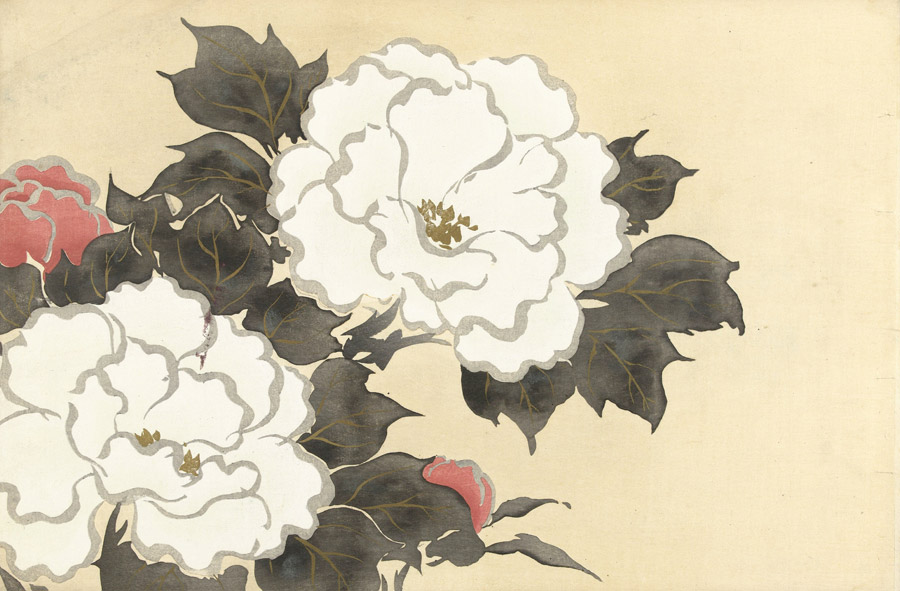

作品名 「深見草」
花言葉 「王者の風格」「誠実」「富貴」「恥じらい」
牡丹
「王者の風格」
牡丹の花は、日本やアジア地域では古くから「花の王様」「百花の王」と称され、なじみ深いお花として扱われてきました。一輪で存在感があり、あでやかでボリュームある花姿は生け花でも良く利用されています。日本を代表する歌人与謝野晶子は、牡丹の花を「神秘の花」「熱の花」と呼び、歌をいくつも詠んでいます。原産地の中国では「花神」「花王」という別名を持ち、楊貴妃のシンボルとしても知られています。そのほか、多くの皇帝や皇后から愛されてきました。
深見草
神坂雪佳
神坂 雪佳は、近現代の日本の画家であり、図案家。京都に暮らし、明治から昭和にかけての時期に、絵画と工芸の分野で多岐にわたる活動をした。「深見草」は、1909-10年に芸艸堂から出版された画集『百々世草』に掲載されていた作品。
| 作品名 | 深見草 |
| 作者 | 神坂雪佳 |
| 制作年 | 1909年 |
| 種類 | 多色木版摺・越前和紙 |
| 寸法 | 30.0×45.0cm |
| 所蔵 | アムステルダム国立美術館 |